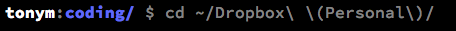

CD in command line
I am storing my working files in a folder in Dropbox. My Dropbox folder contains a personal folder and a work folder and I wasn't sure how to cd via the command line to get to a specific folder that has paranthesis in the name, so I Googled it. I pasted below for my reference, bascially I am escaping the parenthesis.

command line
Git Cheatsheet
- git init (initializes/sets up new repository)
- git add -A (staging-adds everything including deletions)
- git commit -m "descriptive message goes here"
- git push origin master
- git checkout -b gh-pages (creates new branch)
- git branch -d master (deletes master branch)
git
Pseudo-class
a pseudo-class selector acts as if you have added a class to an element in your markup
to use a pseudo-class we append it to the element we want to target with a colon :